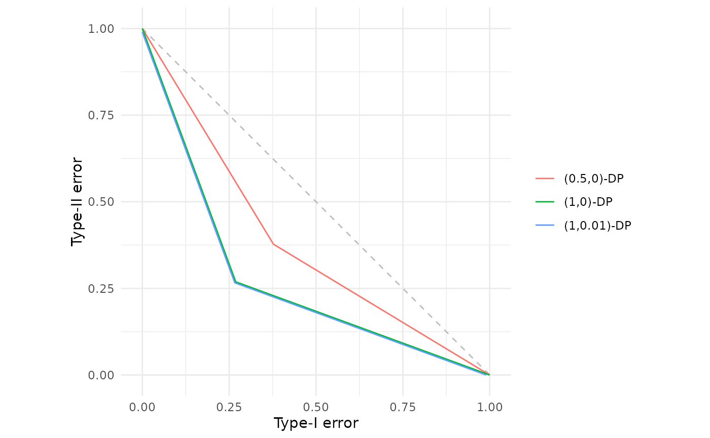
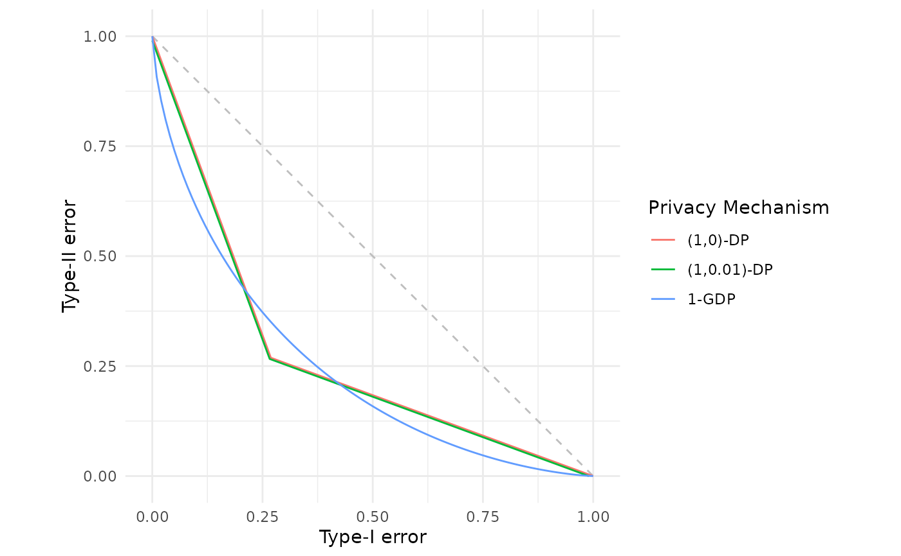

Constructs the trade-off function corresponding to the classical \((\varepsilon, \delta)\)-differential privacy guarantee. This is the f-DP representation of the approximate differential privacy definition, which allows a small probability \(\delta\) of privacy breach (if \(\delta > 0\)) while maintaining \(\varepsilon\)-differential privacy with probability \(1-\delta\).
The resulting trade-off function is piecewise linear with two segments, reflecting the geometry of \((\varepsilon, \delta)\)-DP in the hypothesis testing framework.
The function returned can be called either without arguments to retrieve the underlying data points, or with an alpha argument to evaluate the trade-off at specific Type-I error rates.
Value
A function of class c("fdp_epsdelta_tradeoff", "function") which computes the \((\varepsilon, \delta)\)-DP trade-off function.
When called:
Without arguments: Returns a data frame with columns
alphaandbetacontaining the skeleton points of the piecewise linear trade-off function.With an
alphaargument: Returns a data frame with columnsalphaandbetacontaining the Type-II error values corresponding to the specified Type-I error rates.
Details
Creates an \((\varepsilon, \delta)\)-differential privacy trade-off function for use in f-DP analysis and visualisation. If you would like a reminder of the formal definition of \((\varepsilon, \delta)\)-DP, please see further down this documentation page in the "Formal definition" Section.
The function returns a closure that stores the \(\varepsilon\) and \(\delta\) parameters in its environment. This function can be called with or without arguments supplied, either to obtain the skeleton or particular Type-II error rates for given Type-I errors respectively.
Formal definition
Classical \((\varepsilon, \delta)\)-differential privacy (Dwork et al., 2006a,b) states that a randomised mechanism \(M\) satisfies \((\varepsilon, \delta)\)-DP if for all neighbouring datasets \(S\) and \(S'\) that differ in a single observation, and any event \(E\), $$\mathbb{P}(M(S) \in E) \le e^\varepsilon \mathbb{P}[M(S') \in E] + \delta$$
In the f-DP framework (Dong et al., 2022), this corresponds to a specific trade-off function, $$f_{\varepsilon,\delta} \colon [0,1] \to [0,1]$$ which maps Type-I error rates \(\alpha\) to the minimum achievable Type-II error rates \(\beta\) when distinguishing between the output distributions \(M(S)\) and \(M(S')\).
The special case \(\delta = 0\) corresponds to pure \(\varepsilon\)-differential privacy, where the trade-off function has no fixed disclosure risk.
References
Dong, J., Roth, A. and Su, W.J. (2022). “Gaussian Differential Privacy”. Journal of the Royal Statistical Society Series B, 84(1), 3–37. doi:10.1111/rssb.12454 .
Dwork, C., Kenthapadi, K., McSherry, F., Mironov, I. and Naor, M. (2006a) “Our Data, Ourselves: Privacy Via Distributed Noise Generation”. In: Advances in Cryptology - EUROCRYPT 2006, 486–503. doi:10.1007/11761679_29 .
Dwork, C., McSherry, F., Nissim, K. and Smith, A. (2006b) “Calibrating Noise to Sensitivity in Private Data Analysis”. In: Theory of Cryptography, 265–284. doi:10.1007/11681878_14 .
See also
fdp() for plotting trade-off functions,
est_epsdelta() for finding the choice of \(\varepsilon\) and \(\delta\) that lower bounds a collection of trade-off functions.
Additional trade-off functions can be found in
gdp() for Gaussian differential privacy, and
lap() for Laplace differential privacy.
Examples
# Pure epsilon-differential privacy with epsilon = 1
pure_dp <- epsdelta(1.0)
pure_dp
#> (ε, δ)-Differential Privacy Trade-off Function
#> Parameters:
#> ε = 1
#> δ = 0
pure_dp() # View the skeleton points
#> alpha beta
#> 1 0.0000000 1.0000000
#> 2 0.2689414 0.2689414
#> 3 1.0000000 0.0000000
# Approximate DP with epsilon = 1 and delta = 0.01
approx_dp <- epsdelta(1.0, 0.01)
approx_dp
#> (ε, δ)-Differential Privacy Trade-off Function
#> Parameters:
#> ε = 1
#> δ = 0.01
# Evaluate at specific Type-I error rates
approx_dp(c(0.05, 0.1, 0.25, 0.5))
#> alpha beta
#> 1 0.05 0.8540859
#> 2 0.10 0.7181718
#> 3 0.25 0.3104295
#> 4 0.50 0.1802609
# Plot and compare different (epsilon, delta) configurations
fdp(epsdelta(0.5),
epsdelta(1.0),
epsdelta(1.0, 0.01))

# Compare with Gaussian DP
fdp(epsdelta(1.0),
epsdelta(1.0, 0.01),
gdp(1.0),
.legend = "Privacy Mechanism")
